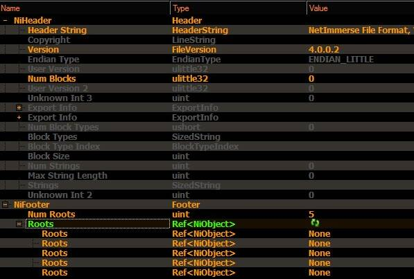

Эффекты - интересный и полезный элемент ниф файлов, придающий им дополнительную живость (С)
niHeader
При открытии любого Ниф файла*, в окне Block Detail можно видеть, кроме общего списка нод и шейпов, еще два "информационных" параметра: niHeader и NiFooter.
Header - проще, Заголовок Файла. Содержит указание версии и собственно все.
Содержит системную информацию о версии Ниф файла и его устройстве.
Не поддается редактированию в Нифскопе.
*Kf, xNif, Nif = все они содержат Хидер и Футер.
Просто интересно.
Не было замечено Ниф файлов версии 5 - 9 версий. Но после 4-ой сразу была 10ая, а потом 20ая.
Что видимо связано с перепродажей компании разработчика движка.
В начале был NetImmerse и версия ниф файлов 3-4.
А потому пришел Gamebryo и версия сразу стала 10х.
Т.е. движок Netimmerse версии 4 писался в хидер файлов, как 4.Х.Х.Х
А движок Gamebryo версии 1.Х писался в хидере, как 10.Х.Х.Х
Старый добрый ребрендинг, при этом ниф файлы Геймбрио 10 и НетИмерсе 4 имеют очень много общего.
NiFooter
раздел в котором указывается Корневая нода ниф файла.
Num Roots - кол-во оных.
Roots - номера оных.
Номера, порядок в списке, кол-во и т.п. можно менять... но нет смысла.
При сохранении файла нифскоп вернет все на исходные значения.
И хотя РутовыхНод может быть несколько, отображаться в игре будет только одна, та, что с номером НУЛЬ (0).
*Если вставить некий объект в сцену за приделами нулевой ноды, он пропишется как второй рут в Футтер, но работать будет только первый в списке.
После сохранения ниф файла, кол-во рутовых сократиться до одной.

Взято с Дискорда(С)
To paraphrase a statement made by one of the designers for Java3D regarding a scene graph: It's just a data structure. As with any data structure in computer science, it is important to know how to use that structure, but it is equally as important to know what the data structure was designed for and when not to use it, at least in the form that it was built.
When I worked at Numerical Design, Ltd. (now part of Emergent Game Technologies) developing NetImmerse (now Gamebryo) in the late 1990s, one of the first games to ship using that engine was Prince of Persia 3D from Red Orb Entertainment. Given the limited power of graphics hardware at that time (the game ran on 3dfx Voodoo cards), the Red Orb developers and artists did an excellent job getting this game to run with what they had. The process was nontrivial because they licensed the binaries for a 3D character training and animation tool. This tool insisted on managing all the transformations in the characters, but so did NetImmerse's scene graph management system. Red Orb did manage to get access to the animation tool source code and was able to remove the redundancy, and the game ran at real-time rates. What surprised many of us, though, was that the game was actually shipped using NetImmerse scene graphs, stored as files with the extension.nif.
I also recall responding to a post to the Usenet newsgroup, comp.graphics .algorithms, where the original poster wanted to know what the NIF file format was. This was for the popular game Morrowind (one of the Elder Scrolls games) from Bethesda Softworks, LLC. Apparently, NIF files were also shipped with this game. I find this surprising as well.
When designing the scene graph data structure in NetImmerse, the main goal was to mimic the organization provided by the data structures in the 3D Studio Max modeling package. Realizing that game developers would build their data sets and characters in such a package, we would have to export that data to a similar format to preserve things such as spatial locality. More important at the time, we had to preserve the animation information in articulated characters. The NIF files were not really a new “file format”; rather,they represented the current state of the scene graph data structures (nodes, geometric primitives, lights, cameras, etc.). We exported from 3D Studio Max to NIF files and then loaded the NIF files for development and testing. It was not our intent that games would actually ship with these. The data structures were intended for development, not for deployment. (С) - рассказ разработчика Ниф формата.
I knew it.
I always knew it.
It is from 3D Game Engine Design: A Practical Approach to Real-Time Computer Graphics
It is one for the history books.
At least modding kinda justifies the development mode.
Проще говоря, Ниф файл - это архив сцены МАХ изначально не заточенный для работу с играми.